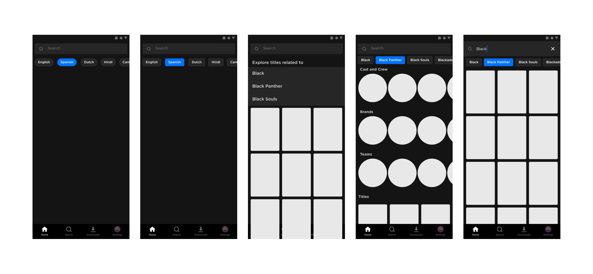

Search Suggestions
Improving discoverability of titles on platform
Context
Stan offers a wide range of titles for users to watch on platform. Finding these titles within curated feeds can become frustrating for users, which is when they use Search to find something to watch. Search must, therefore, empower users to find something to watch with ease.
My Role
Status ONGOING
This feature is currently being developed on iOS and Android mobile, tablet, web and TV devices.
Objective
From Customer Service reports and business analytics, it was clear that users had a difficult time finding something to watch on Stan. There were patterns of users spending over five minutes looking for something to watch after browsing through the curated feeds on offer, whereas others would turn to Search almost immediately knowing exactly what they wanted to watch and, after being unable to find the right content from them, leaving the app. Consequently, engagement with the platform was lower than predicted and customer viewing hours were declining.
The Search function therefore needed to be optimised to help users to find a title that i) they were directly searching for and ii) aligned with their content preferences. The underlying business goal was to keep people watching content on platform for longer, thereby increasing engagement.
Problems
When I first received the brief to improve Search across the different devices that are supported by Stan, the question that popped into my head was why has it taken so long to improve Search? Was it simply because of resourcing constraints? Or perhaps a lack of interest in the feature? I couldn't be sure.
This led me to my next course of action- to investigate the search experience on different devices and chat with developers to understand why this feature had not been looked at. Unsurprisingly, my conversations with developers and product managers revealed my hypothesis to be true. Between stretched development resources, a lack of mobile-specific designs and hesitance from key business stakeholders, there was simply no time to roll out the new feature.
However, these chats did not deter me from researching the search experience in more detail to put forward a strong business case as to why an improved Search would meet both business and user expectations. Determined, I conducted an internal audit of the existing search function. My findings showed:
Limited Feature Parity
Mobile and tablet did not offer the same experience as our other devices- namely, web and TV. There were no search suggestion tags available on mobile, despite being implemented on other devices months prior.
Personalisation
We had none. However, from competitor research it was clear that this is a growing industry trend that offers users customisable viewing experiences, with the perceived benefit of keeping customers on platform for longer.
Content Separation
Rows of titles were presented to users when using Search, with limited visual guides to separate one type of content from another. This is generally advised against as it can increase cognitive load and make users feel overwhelmed.
Refining the Problem Space
Upon discussion with Product Managers whereby I shared my findings, the problem was refined and a hypothesis was formed collaboratively. We developed a problem statement to better capture the issue and guide the design process:
Users navigate to Search when they aren't able to find something to watch from the curated Stan feeds, where Search is used as a means to find something to watch. When users aren’t able to find content that’s relevant to them, engagement declines.
By improving the functionality of the search function, such as through the implementation of suggestions tags and a UI overhaul of the interface for ease of use, we will deliver a faster, more efficient way for users to find something to watch. This will allow users to find something to watch and consume content for longer, thus increasing engagement.
Ideation and Iteration
The next few steps were to create sketches and wireframes, and refine these concepts through multiple rounds of iteration and feedback from Product Managers, Developers and my Product Design teammates. Once we collectively landed on designs that everyone was happy with, I defined the specs of each design for each individual device while carefully considering the limitations of each platform. Below are a couple of wireframes that were presented to stakeholders, before being refined.
Implementing the Designs
It was time to build the new Search feature across mobile, tablet, TV and web. Currently a work in progress, I have been working closely with developers to implement the new designs, conducting Design QA as I go and providing feedback as needed. Once implemented, this feature will be carefully monitored to assess whether it has an overall positive effect on engagement. In the instance the expected KPIs are not reached, further research and iteration will take place to deliver a Search experience that has a positive effect on both users and the business.